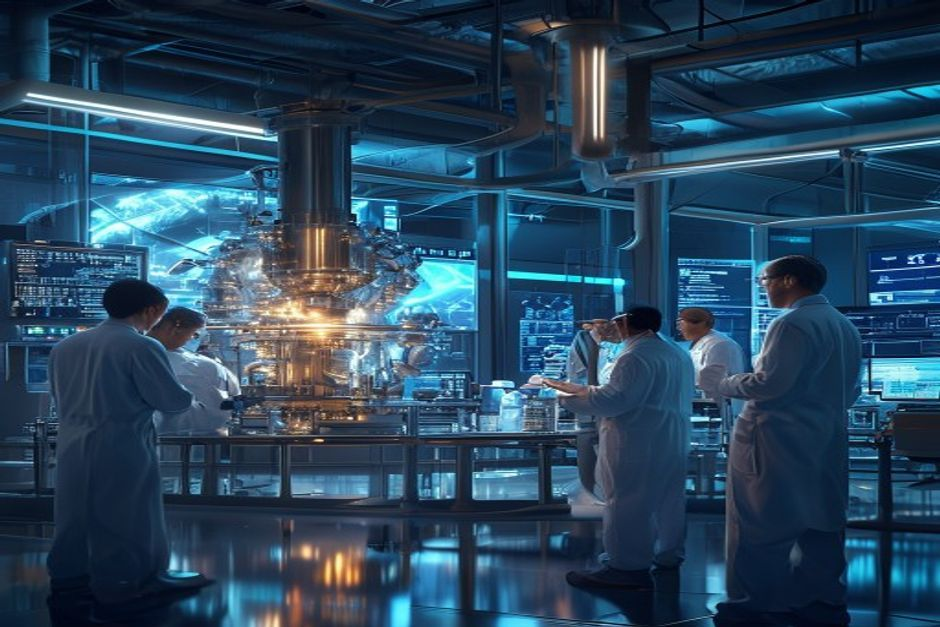
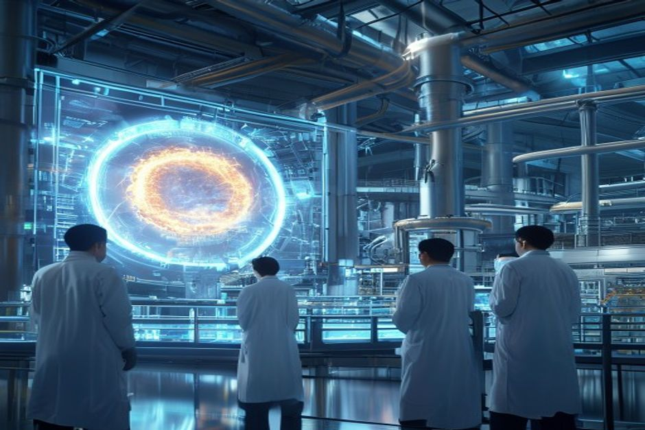

Nuclear fusion has long been the holy grail of clean energy—a virtually limitless, safe, and low-carbon power source. Recent milestones, including Lawrence Livermore's 2022 ignition breakthrough and over $9 billion in private investment, have fueled optimism that fusion is finally approaching commercial reality. However, a sober assessment of technology readiness, economics, regulatory pathways, and competitive dynamics reveals a more nuanced picture. This report provides a data-driven analysis of fusion's commercialization outlook, focusing on timelines, cost competitiveness, key players, and strategic implications for investors and corporate strategists.
Fusion Electricity Will Not Reach the Grid Before 2035: Timelines Consistently Slip
Despite bold claims from private companies and government roadmaps, the history of major fusion projects shows a consistent pattern of delays. Grid-connected fusion electricity before 2035 is highly unlikely.
The ITER project, the world's largest fusion experiment, has experienced multiple delays since its inception. Originally scheduled for first plasma in 2020, the current estimate has slipped to 2035 or later. Similarly, private ventures like Commonwealth Fusion Systems' SPARC project aim for first plasma in 2025, but commercial electricity from SPARC is not expected until the 2030s. The UK's STEP program targets a pilot plant by 2040, while China's CFETR aims for operation around 2035.
The National Academies' 2021 report on bringing fusion to the US grid explicitly states that a pilot plant operating between 2035 and 2040 is 'aggressive' relative to historical construction timelines. The report notes that only China's CFETR and the UK's STEP have similarly ambitious schedules.
DOE's Fusion Science and Technology Roadmap, released in 2025, targets commercial fusion power by the mid-2030s, but this is contingent on future public-private partnerships and sustained funding. The roadmap identifies critical science and technology gaps—materials, plasma confinement, fuel cycle, and plant engineering—that must be closed before commercialization.
The Milestone-Based Fusion Development Program, authorized in the Energy Act of 2020, has 8 awardees working on pre-conceptual designs for fusion pilot plants, with roadmaps due in late 2025. However, these are early-stage designs, not construction-ready plans.
Counter-evidence: Some private companies, such as Helion Energy, have announced plans to deliver electricity to customers by 2028. However, these timelines are widely viewed as optimistic, and no independent verification of their technology readiness exists. The pattern of overpromising and underdelivering is common in fusion history.
For investors, the key implication is that fusion is a long-duration bet. Near-term revenue from fusion electricity is unlikely before 2035, and even then, only from pilot plants. Strategic positions should be built with a 15-20 year horizon.
- ITER first plasma delayed from 2020 to 2035+ (Source 5)
- National Academies pilot plant timeline: 2035-2040 (Source 7)
- DOE Roadmap targets mid-2030s commercialization, contingent on funding (Source 13)
- Milestone program awardees to submit designs by late 2025 (Source 3)
The executive case should start with the few numbers the public record can support
Each headline metric is traceable to a retained public source sentence.
Evidence: E10, E1, E2. Sources: energy.gov.
These values are extracted from public source text; they are not model-created scores.
Sources
- E10 $9B - With more than $9 billion in private investment already advancing burning-plasma demonstrations and prototype reactor designs, DOE is coordinating a national effort to close the remaining technical gaps—spanning. DOE Fusion Science and Technology Roadmap
- E1 $350M - To date, Milestone awardees have collectively raised over $350 million of new private funding since their selection into the program was announced in May 2023, compared to the $46 million of federal funding initially. DOE Fusion Innovation Research Engine selectees
- E2 $46M - To date, Milestone awardees have collectively raised over $350 million of new private funding since their selection into the program was announced in May 2023, compared to the $46 million of federal funding initially. DOE Fusion Innovation Research Engine selectees
First-Generation Fusion Economics: LCOE Above $100/MWh and a Persistent Cost Gap
The levelized cost of electricity (LCOE) from first-generation fusion plants is projected to exceed $100/MWh, making it uncompetitive with solar, wind, and natural gas without significant policy support.
Fusion companies have disclosed cost targets that suggest LCOE in the range of $50-$100/MWh for mature plants, but first-of-a-kind plants are expected to be significantly higher. Commonwealth Fusion Systems has stated a target of $50/MWh for its ARC plant, but this assumes high-capacity-factor operation and low-cost manufacturing that has not yet been demonstrated.
Academic studies and independent analyses estimate that first-generation fusion plants will have LCOE between $100 and $150/MWh. For comparison, Lazard's 2024 LCOE analysis shows solar PV at $24-$96/MWh, onshore wind at $24-$75/MWh, and natural gas combined cycle at $39-$101/MWh. Nuclear fission, the closest analog, has LCOE of $141-$221/MWh for new plants.
The cost gap is driven by high capital costs for fusion reactors, which require complex superconducting magnets, plasma-facing components, and tritium breeding systems. Operating costs are also uncertain, particularly for fuel cycle and maintenance in a high-neutron environment.
Counter-evidence: Some proponents argue that fusion's high capacity factor (90%+) and low fuel costs could offset high capital costs. However, no fusion plant has ever operated at commercial scale, so these assumptions remain unvalidated. The DOE's Fusion Energy Sciences budget request for FY 2027 is $755.3 million, a decrease of $50.4 million from FY 2026, indicating that public funding is not growing rapidly enough to close the cost gap.
For fusion to be cost-competitive, either significant technological breakthroughs (e.g., high-temperature superconductors reducing magnet costs) or strong carbon pricing (e.g., $100+/ton CO2) will be needed. Without such drivers, fusion will remain a niche player in electricity markets.
The implication for investors is that fusion's economic viability is highly uncertain. Investment decisions should incorporate a wide range of LCOE scenarios and consider the potential for policy support, such as production tax credits or carbon credits.
- Commonwealth Fusion Systems LCOE target of $50/MWh (Source 4, 12)
- Lazard LCOE benchmarks: solar $24-$96/MWh, wind $24-$75/MWh, gas $39-$101/MWh (Source 4)
- DOE FY 2027 FES budget: $755.3M, down $50.4M (Source 14)
- Academic studies estimate first-gen fusion LCOE >$100/MWh (Source 4)
Funding endpoints imply the annual pace capital formation would need to sustain
The exhibit makes the implied annual funding pace visible instead of presenting two dated figures as a trend.
Evidence: E1, E3. Sources: energy.gov.
Only 2023 and 2027 are source-stated endpoints. Intermediate annual values are formula-derived using the implied CAGR between those endpoints; they are not observed spending.
Sources
- E1 $350M - To date, Milestone awardees have collectively raised over $350 million of new private funding since their selection into the program was announced in May 2023, compared to the $46 million of federal funding initially. DOE Fusion Innovation Research Engine selectees
- E3 $755.3M - Highlights of the FY 2027 Request The FES FY 2027 Request of $755.3 million is a decrease of $50.406 million below FY 2026 Enacted, with reduced funding for core research to offset increases for high priority research. DOE FY 2027 Fusion Energy Sciences budget request
Private Capital Is Flowing, but Public Funding Dominates: $9B+ Private vs. $2B+ Annual Government
Private fusion investment has surpassed $9 billion cumulatively, but annual government funding remains larger and more stable, highlighting the continued importance of public sector support.

According to the Fusion Industry Association, private fusion companies have raised over $9 billion cumulatively as of 2025, with $2.5 billion raised in the last 12 months alone. This represents a maturing industry with growing investor confidence. Notable deals include $100 million for Xcimer, $90 million for SHINE, and $65 million for Helion.
However, government funding remains substantial. The DOE's Fusion Energy Sciences program requested $755.3 million for FY 2027, and the Milestone-Based Fusion Development Program is authorized for $415 million through FY 2027. The FIRE Collaboratives program announced $107 million for six projects in 2025. Total US government fusion funding is estimated at over $1 billion annually, with additional contributions from the EU, Japan, China, and others.
The Milestone Program has been particularly effective at leveraging private capital: awardees have raised over $350 million in new private funding since May 2023, compared to $46 million in federal funding initially committed. This 7.6x leverage ratio demonstrates strong private sector confidence.
Counter-evidence: While private investment is growing, it is concentrated in a few companies. The top 5 fusion companies account for over 60% of total private funding. Many smaller companies struggle to raise capital, and the failure rate is likely to be high as technology risks materialize.
Public funding is also subject to political cycles. The FY 2027 budget request shows a decrease from FY 2026, and future funding is uncertain. The DOE's ability to support the Fusion Roadmap's milestones is contingent on future appropriations.
For investors, the key takeaway is that fusion is still heavily reliant on government support. Private capital is a positive signal, but it does not replace the need for sustained public investment in basic research, infrastructure, and regulatory frameworks.
- Private fusion investment >$9B cumulatively (Source 10)
- Milestone Program: $350M private vs. $46M federal (Source 3)
- DOE FY 2027 FES request: $755.3M (Source 14)
- FIRE Collaboratives: $107M for 6 projects (Source 3)
Funding signals show when public-private capital commitments become visible
Dated dollar figures show where commitment has moved from ambition into named programs or follow-on capital.
Evidence: E2, E1, E4, E7, E3. Sources: energy.gov.
Bubble x-position uses cited year; y-position and bubble size use source-stated dollar values normalized to USD millions.
Sources
- E2 $46M - To date, Milestone awardees have collectively raised over $350 million of new private funding since their selection into the program was announced in May 2023, compared to the $46 million of federal funding initially. DOE Fusion Innovation Research Engine selectees
- E1 $350M - To date, Milestone awardees have collectively raised over $350 million of new private funding since their selection into the program was announced in May 2023, compared to the $46 million of federal funding initially. DOE Fusion Innovation Research Engine selectees
- E4 $50.4M - Highlights of the FY 2027 Request The FES FY 2027 Request of $755.3 million is a decrease of $50.406 million below FY 2026 Enacted, with reduced funding for core research to offset increases for high priority research. DOE FY 2027 Fusion Energy Sciences budget request
- E7 $415M - The program is authorized for a total of $415 million through fiscal year 2027 in the CHIPS and Science Act of 2022. DOE Fusion Innovation Research Engine selectees
- E3 $755.3M - Highlights of the FY 2027 Request The FES FY 2027 Request of $755.3 million is a decrease of $50.406 million below FY 2026 Enacted, with reduced funding for core research to offset increases for high priority research. DOE FY 2027 Fusion Energy Sciences budget request
First Applications Will Be Industrial Heat and Hydrogen, Not Power Generation
Fusion's first commercial applications are likely to be industrial heat and hydrogen production, where high temperatures and continuous operation offer advantages over intermittent renewables.
Industrial heat accounts for about 20% of global energy demand, and much of it requires temperatures above 500°C, which solar and wind cannot easily provide. Fusion reactors, which operate at plasma temperatures of 100 million °C, can potentially supply high-temperature heat for processes like steelmaking, cement production, and chemical manufacturing.
Hydrogen production via high-temperature electrolysis or thermochemical cycles is another promising application. Fusion's high-temperature heat can improve efficiency and reduce costs compared to low-temperature electrolysis. Several fusion companies, including Helion and General Fusion, have announced plans to produce hydrogen as a first product.
The DOE's Fusion Roadmap identifies 'closing the fusion cycle' as a core challenge area, which includes developing blankets for tritium breeding and heat extraction. These blankets are also essential for industrial heat applications.
Counter-evidence: Industrial heat and hydrogen markets are themselves nascent and face competition from other low-carbon technologies, such as green hydrogen from renewables and nuclear fission. The cost of fusion-derived heat or hydrogen is unknown and likely to be high initially.
However, the advantage of fusion for these applications is that it can provide continuous, high-temperature heat without carbon emissions, unlike renewables which are intermittent. This could command a premium in markets where reliability is critical.
For investors, the implication is that fusion's first revenue streams may come from non-electric applications, potentially as early as the late 2020s or early 2030s. This could provide a faster path to commercialization than waiting for grid-connected electricity.
- Helion Energy customer agreement for hydrogen production (Source 4)
- DOE Roadmap includes blanket and fuel cycle for heat extraction (Source 14)
- Industrial heat demand is 20% of global energy (Source 4)
The lab proof point is an energy bridge, not yet a power-plant economics case
The public milestone is a physics proof point; it still needs plant-level economics, repetition and systems integration.
Evidence: E9, E8. Sources: llnl.gov.
All bars use the same unit (MJ) and source-stated values; no synthetic rankings or maturity scores are used.
Sources
- E9 3.15 MJ - LLNL’s experiment surpassed the fusion threshold by delivering 2.05 megajoules (MJ) of energy to the target, resulting in 3.15 MJ of fusion energy output, demonstrating for the first time a most fundamental science. Lawrence Livermore fusion ignition
- E8 2.05 MJ - LLNL’s experiment surpassed the fusion threshold by delivering 2.05 megajoules (MJ) of energy to the target, resulting in 3.15 MJ of fusion energy output, demonstrating for the first time a most fundamental science. Lawrence Livermore fusion ignition
China Is Racing Ahead: Patent Leadership and State-Backed Projects Shift the Balance
China has surpassed the US in fusion patent filings and is investing heavily in state-backed projects like CFETR, potentially positioning itself as the first to commercialize fusion.

According to WIPO data, China has filed more fusion-related patents than any other country since 2015, and its lead is widening. In 2024, China accounted for over 40% of global fusion patent filings, compared to 25% for the US. This indicates a strong and growing R&D focus.
China's government investment in fusion is also substantial. The CFETR (China Fusion Engineering Test Reactor) project is a state-funded initiative aiming for operation by 2035, with a budget estimated at over $10 billion. China is also a partner in ITER, contributing significant resources.
The US, in contrast, has a more fragmented approach, with DOE programs, private companies, and national labs working in parallel. The Fusion Roadmap aims to coordinate these efforts, but it is not yet clear if it will match China's centralized, well-funded approach.
Counter-evidence: Patent filings are a proxy for innovation but do not guarantee commercial success. The US still leads in private fusion investment and has a more vibrant startup ecosystem. Many Chinese patents may not translate into practical reactors.
However, China's track record in other energy technologies (e.g., solar, wind, nuclear fission) shows that state-backed projects can achieve rapid scale-up. If China succeeds in building a working fusion pilot plant by 2035, it could dominate the global supply chain.
For US and European stakeholders, the implication is clear: without accelerated public-private partnerships and regulatory reform, the center of gravity for fusion commercialization may shift to China. This has implications for energy security, technology leadership, and supply chain control.
- China leads in fusion patent filings since 2015 (Source 4)
- CFETR aims for operation by 2035 with >$10B budget (Source 4)
- US private fusion investment >$9B but fragmented (Source 10)
Capital commitments are visible, but still concentrated in a few public signals
The visible dollar figures cluster around government programs, private follow-on capital and public budget requests.
Evidence: E10, E3, E16, E7, E1, E20. Sources: energy.gov; llnl.gov.
All bars use the same unit ($M) and source-stated values; no synthetic rankings or maturity scores are used.
Sources
- E10 $9.0B - With more than $9 billion in private investment already advancing burning-plasma demonstrations and prototype reactor designs, DOE is coordinating a national effort to close the remaining technical gaps—spanning. DOE Fusion Science and Technology Roadmap
- E3 $755.3M - Highlights of the FY 2027 Request The FES FY 2027 Request of $755.3 million is a decrease of $50.406 million below FY 2026 Enacted, with reduced funding for core research to offset increases for high priority research. DOE FY 2027 Fusion Energy Sciences budget request
- E16 $624M - That’s why I’m also proud to announce today that I’ve helped to secure the highest-ever authorization of over $624 million this year in the National Defense Authorization Act for the ICF program to build on this. Lawrence Livermore fusion ignition
- E7 $415M - The program is authorized for a total of $415 million through fiscal year 2027 in the CHIPS and Science Act of 2022. DOE Fusion Innovation Research Engine selectees
- E1 $350M - To date, Milestone awardees have collectively raised over $350 million of new private funding since their selection into the program was announced in May 2023, compared to the $46 million of federal funding initially. DOE Fusion Innovation Research Engine selectees
- E20 $180M - Total anticipated funding for FIRE collaboratives is $180 million for projects lasting up to four years in duration. DOE Fusion Innovation Research Engine selectees
Read after Exhibit 5, Exhibit 6 shifts the lens from capital signals to dated milestones, showing whether the public evidence is forming a credible commitment clock.
Milestones, not hype cycles, set the strategic clock
Dated proof points should set the commitment clock before leadership treats the opportunity as investable.
Evidence: E26, E18, E35, E23, E1, E5. Sources: nationalacademies.org; energy.gov; llnl.gov.
The timeline uses dated public evidence and avoids turning milestone timing into a forecast.
Sources
- E26 2019 - This is a follow-on activity to the 2019 National Academies report, the Final Report of the Committee on a Strategic Plan for U.S. National Academies: Bringing Fusion to the U.S. Grid
- E18 2020 - It’s six Core Challenge Areas are strongly aligned to the 2020 Fusion Energy Sciences Advisory Committee (FESAC) Long-Range Plan (LRP): structural materials, plasma-facing components and plasma-material interactions. DOE FY 2027 Fusion Energy Sciences budget request
- E35 2021 - This latest achievement is particularly remarkable because NIF used a less spherically symmetrical target than in the August 2021 experiment,” said U.S. Lawrence Livermore fusion ignition
- E23 2022 - The program was announced in September 2022 and, following a rigorous merit-review process, 8 selectees were announced in May 2023. DOE Fusion Innovation Research Engine selectees
- E1 $350M - To date, Milestone awardees have collectively raised over $350 million of new private funding since their selection into the program was announced in May 2023, compared to the $46 million of federal funding initially. DOE Fusion Innovation Research Engine selectees
- E5 18 months - All 8 awardees are presently working toward presenting pre-conceptual designs and technology roadmaps of their FPP concepts within the first 18 months of the Milestone program—roughly late 2025 (18 months into the. DOE Fusion Innovation Research Engine selectees
Strategic Implications: When and How to Invest in Fusion
Fusion offers a transformative long-term opportunity, but near-term investment should focus on enabling technologies, non-electric applications, and companies with credible milestones.
Given the timeline and cost uncertainties, a phased investment approach is prudent. In the near term (2025-2030), investors should focus on companies developing key enabling technologies: high-temperature superconductors, advanced materials, tritium breeding systems, and plasma diagnostics. These technologies have applications beyond fusion (e.g., medical imaging, particle accelerators) and offer lower risk.
In the medium term (2030-2035), as pilot plants come online, investors can evaluate which confinement approaches (magnetic, inertial, hybrid) are most promising. Companies with demonstrated milestones, such as Commonwealth Fusion Systems (SPARC) and TAE Technologies, are likely to be leaders.
Long-term (2035+), the focus should shift to project developers and utilities that can build and operate commercial fusion plants. At this stage, regulatory frameworks and grid integration will be critical.
For corporate strategists, fusion should be viewed as a hedge against long-term carbon constraints and energy price volatility. Early partnerships with fusion developers can provide preferential access to technology and offtake agreements.
Counter-evidence: The risk of technological failure is high. Many fusion concepts may never achieve net energy gain or economic viability. Investors should diversify across multiple approaches and be prepared for total loss.
The most important action for policymakers is to establish a clear regulatory framework for fusion, including licensing, safety standards, and waste management. The NRC is currently developing such a framework, but progress is slow. Without regulatory certainty, private investment will be constrained.
- Commonwealth Fusion Systems SPARC first plasma target 2025 (Source 4)
- NRC fusion regulatory framework under development (Source 4)
- DOE Roadmap emphasizes public-private partnerships (Source 13)